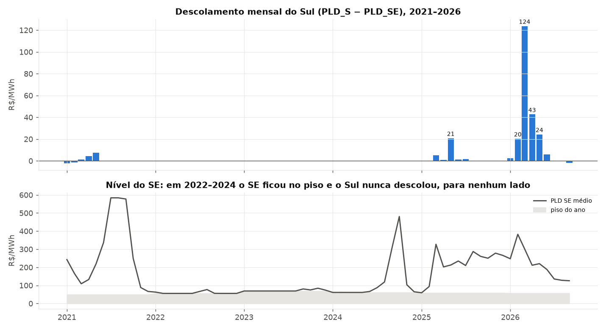
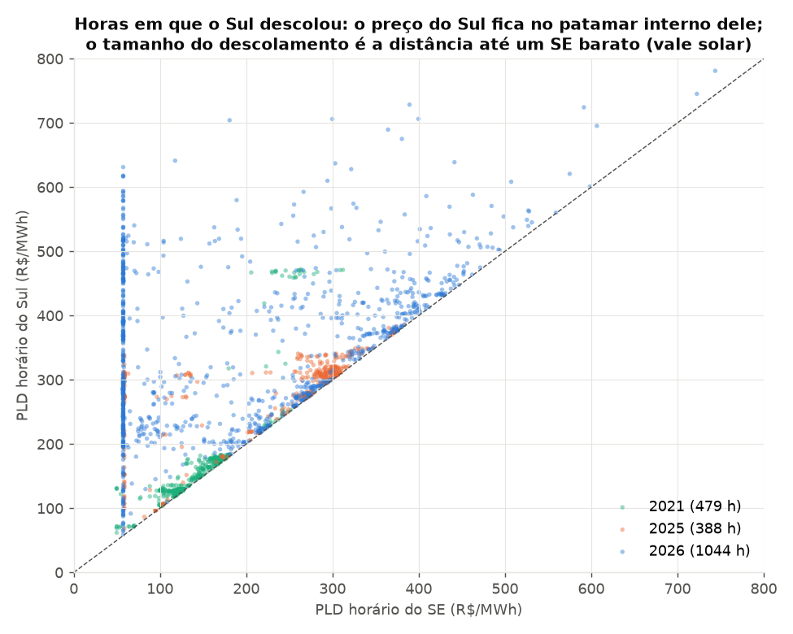
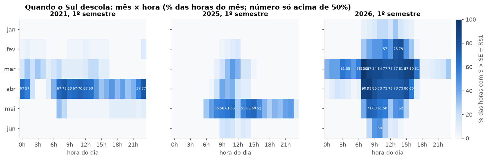
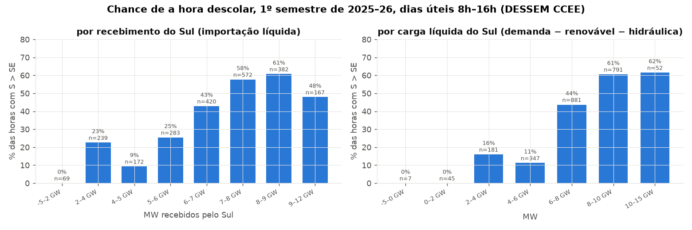

Descolamento do Sul: as três metodologias, com a conta aberta
Três metodologias calculadas lado a lado para o SE informado: A (climatologia dos anos realizados), B (estrutural: chance de travar × ganho por hora) e C (fração por estado do Sul × patamar atrelado ao SE), mais a cotação em estudo (D069–D073): venda = máx(P90 da C, âncora do mês) + λ × (estresse do semestre − piso); compra = pior lado de baixo realizado (+ λ da compra, avançado). Clique numa linha para abrir a conta de cada metodologia, ano a ano. Só o lado de cima está modelado (D059); o lado de baixo entra como fração da folga até o piso na compra. Nenhum método supera a climatologia fora da amostra em 2026 (seções 50–61 da metodologia).
Entrada: SE da mesa e apetite
Resultado por produto
R$/MWh. A: compra = pior ano elegível, venda = melhor (ano entre parênteses); mês em que o ano não era elegível entra como zero. B: pior e melhor ano climático, % = horas travadas previstas. C: P10, justo (média das 2000 séries) e P90. Âncora e estresse: do histórico realizado com o SE informado e a forma horária de cada mês. Cotação: venda e compra pela regra escolhida acima.
Conta aberta: clique num produto
O que o backtest mostrou (só leitura)
Tabelas das seções 50 a 62 de docs/metodologia.md. Decks de 2024 a 2026, alvos até set/26, SE realizado como insumo, histórico até D−2. Rótulos: 2026 é o primeiro ano do regime novo com seca no Sul e está fora de qualquer faixa estimada até 2025.
Diagnóstico e questões abertas
Q9. O justo da C sobe com o SE (patamar da reta ≈ 62 + 0,99 × SE; SE nas horas travadas ≈ 0,64 do mês), enquanto a âncora cai com o SE. Nos 13 meses realizados com trava, a correlação entre o SE do mês e o ganho por hora travada é +0,39. Lado de baixo: só 4 meses desde 2021 com mais de 1% das horas abaixo; set/26 teve a maior ENA de setembro da série e o Sul no piso em 71% dessas horas; fração da folga de −0,012 a −0,031. B: física correta (53% × 55% em mar/26 com insumos realizados) mas insumos erram na escala em que a trava vira (±1 GW).




Página de pesquisa, local. Nada aqui foi validado como cotação; o Sul só tem um episódio do regime novo (2026). Decisões e limites em docs/metodologia.md (seções 48–62).